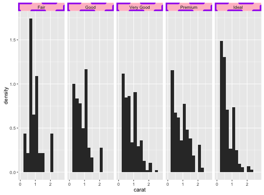

Set theme elements
Usage
theme(..., complete = FALSE, validate = TRUE)
Arguments
- ...
- a list of element name, element pairings that modify the existing theme.
- complete
- set this to TRUE if this is a complete theme, such as
the one returned
by theme_grey(). Complete themes behave differently when added to a ggplot object. - validate
- TRUE to run validate_element, FALSE to bypass checks.
Description
Use this function to modify theme settings.
Details
Theme elements can inherit properties from other theme elements.
For example, axis.title.x inherits from axis.title,
which in turn inherits from text. All text elements inherit
directly or indirectly from text; all lines inherit from
line, and all rectangular objects inherit from rect.
For more examples of modifying properties using inheritance, see
+.gg and %+replace%.
To see a graphical representation of the inheritance tree, see the last example below.
Theme elements
The individual theme elements are:
| line |
all line elements
(element_line) |
| rect |
all rectangular elements
(element_rect) |
| text |
all text elements
(element_text) |
| title |
all title elements: plot, axes, legends
(element_text; inherits from text) |
| aspect.ratio |
| aspect ratio of the panel |
|
axis.title |
label of axes
(element_text; inherits from text) |
| axis.title.x |
x axis label
(element_text; inherits from axis.title) |
| axis.title.y |
y axis label
(element_text; inherits from axis.title) |
| axis.text |
tick labels along axes
(element_text; inherits from text) |
| axis.text.x |
x axis tick labels
(element_text; inherits from axis.text) |
| axis.text.y |
y axis tick labels
(element_text; inherits from axis.text) |
| axis.ticks |
tick marks along axes
(element_line; inherits from line) |
| axis.ticks.x |
x axis tick marks
(element_line; inherits from axis.ticks) |
| axis.ticks.y |
y axis tick marks
(element_line; inherits from axis.ticks) |
| axis.ticks.length |
length of tick marks
(unit) |
| axis.line |
lines along axes
(element_line; inherits from line) |
| axis.line.x |
line along x axis
(element_line; inherits from axis.line) |
| axis.line.y |
line along y axis
(element_line; inherits from axis.line) |
|
legend.background |
background of legend
(element_rect; inherits from rect) |
| legend.margin |
extra space added around legend
(unit) |
| legend.key |
background underneath legend keys
(element_rect; inherits from rect) |
| legend.key.size |
size of legend keys
(unit; inherits from legend.key.size) |
| legend.key.height |
key background height
(unit; inherits from legend.key.size) |
| legend.key.width |
key background width
(unit; inherits from legend.key.size) |
| legend.text |
legend item labels
(element_text; inherits from text) |
| legend.text.align |
| alignment of legend labels (number from 0 (left) to 1 (right)) |
| legend.title |
title of legend
(element_text; inherits from title) |
| legend.title.align |
| alignment of legend title (number from 0 (left) to 1 (right)) |
| legend.position |
| the position of legends ("none", "left", "right", "bottom", "top", or two-element numeric vector) |
| legend.direction |
| layout of items in legends ("horizontal" or "vertical") |
| legend.justification |
| anchor point for positioning legend inside plot ("center" or two-element numeric vector) |
| legend.box |
| arrangement of multiple legends ("horizontal" or "vertical") |
| legend.box.just |
| justification of each legend within the overall bounding box, when there are multiple legends ("top", "bottom", "left", or "right") |
|
panel.background |
background of plotting area, drawn underneath plot
(element_rect; inherits from rect) |
| panel.border |
border around plotting area, drawn on top of plot
so that it covers tick marks and grid lines. This should
be used with fill=NA
(element_rect; inherits from rect) |
| panel.margin |
margin around facet panels
(unit) |
| panel.margin.x |
horizontal margin around facet panels
(unit; inherits from panel.margin) |
| panel.margin.y |
vertical margin around facet panels
(unit; inherits from panel.margin) |
| panel.grid |
grid lines
(element_line; inherits from line) |
| panel.grid.major |
major grid lines
(element_line; inherits from panel.grid) |
| panel.grid.minor |
minor grid lines
(element_line; inherits from panel.grid) |
| panel.grid.major.x |
vertical major grid lines
(element_line; inherits from panel.grid.major) |
| panel.grid.major.y |
horizontal major grid lines
(element_line; inherits from panel.grid.major) |
| panel.grid.minor.x |
vertical minor grid lines
(element_line; inherits from panel.grid.minor) |
| panel.grid.minor.y |
horizontal minor grid lines
(element_line; inherits from panel.grid.minor) |
| panel.ontop |
option to place the panel (background, gridlines)
over the data layers. Usually used with a transparent
or blank panel.background. (logical) |
|
plot.background |
background of the entire plot
(element_rect; inherits from rect) |
| plot.title |
plot title (text appearance)
(element_text; inherits from title) |
| plot.margin |
margin around entire plot
(unit with the sizes of the top, right, bottom, and
left margins) |
|
strip.background |
background of facet labels
(element_rect; inherits from rect) |
| strip.text |
facet labels
(element_text; inherits from text) |
| strip.text.x |
facet labels along horizontal direction
(element_text; inherits from strip.text) |
| strip.text.y |
facet labels along vertical direction
(element_text; inherits from strip.text) |
| strip.switch.pad.grid |
space between strips and axes when strips are switched
(unit) |
| strip.switch.pad.wrap |
space between strips and axes when strips are switched
(unit) |
Examples
p <- ggplot(mtcars, aes(mpg, wt)) + geom_point() p
p + theme(panel.background = element_rect(colour = "pink"))p + theme_bw()# Scatter plot of gas mileage by vehicle weight p <- ggplot(mtcars, aes(wt, mpg)) + geom_point() # Calculate slope and intercept of line of best fit coef(lm(mpg ~ wt, data = mtcars))(Intercept) wt 37.285126 -5.344472p + geom_abline(intercept = 37, slope = -5)# Calculate correlation coefficient with(mtcars, cor(wt, mpg, use = "everything", method = "pearson"))[1] -0.8676594#annotate the plot p + geom_abline(intercept = 37, slope = -5) + geom_text(data = data.frame(), aes(4.5, 30, label = "Pearson-R = -.87"))# Change the axis labels # Original plot p
p + labs(x = "Vehicle Weight", y = "Miles per Gallon")# Or p + labs(x = "Vehicle Weight", y = "Miles per Gallon")
# Change title appearance p <- p + labs(title = "Vehicle Weight-Gas Mileage Relationship") # Set title to twice the base font size p + theme(plot.title = element_text(size = rel(2)))p + theme(plot.title = element_text(size = rel(2), colour = "blue"))# Changing plot look with themes DF <- data.frame(x = rnorm(400)) m <- ggplot(DF, aes(x = x)) + geom_histogram() # Default is theme_grey() m`stat_bin()` using `bins = 30`. Pick better value with `binwidth`.# Compare with m + theme_bw()`stat_bin()` using `bins = 30`. Pick better value with `binwidth`.# Manipulate Axis Attributes m + theme(axis.line = element_line(size = 3, colour = "red", linetype = "dotted"))`stat_bin()` using `bins = 30`. Pick better value with `binwidth`.m + theme(axis.text = element_text(colour = "blue"))`stat_bin()` using `bins = 30`. Pick better value with `binwidth`.m + theme(axis.text.y = element_blank())`stat_bin()` using `bins = 30`. Pick better value with `binwidth`.
m + theme(axis.ticks = element_line(size = 2))`stat_bin()` using `bins = 30`. Pick better value with `binwidth`.m + theme(axis.title.y = element_text(size = rel(1.5), angle = 90))`stat_bin()` using `bins = 30`. Pick better value with `binwidth`.m + theme(axis.title.x = element_blank())`stat_bin()` using `bins = 30`. Pick better value with `binwidth`.m + theme(axis.ticks.length = unit(.85, "cm"))`stat_bin()` using `bins = 30`. Pick better value with `binwidth`.# Legend Attributes z <- ggplot(mtcars, aes(wt, mpg)) + geom_point(aes(colour = factor(cyl))) zz + theme(legend.position = "none")z + theme(legend.position = "bottom")
# Or use relative coordinates between 0 and 1 z + theme(legend.position = c(.5, .5))# Add a border to the whole legend z + theme(legend.background = element_rect(colour = "black"))# Legend margin controls extra space around outside of legend: z + theme(legend.background = element_rect(), legend.margin = unit(1, "cm"))z + theme(legend.background = element_rect(), legend.margin = unit(0, "cm"))# Or to just the keys z + theme(legend.key = element_rect(colour = "black"))z + theme(legend.key = element_rect(fill = "yellow"))z + theme(legend.key.size = unit(2.5, "cm"))z + theme(legend.text = element_text(size = 20, colour = "red", angle = 45))z + theme(legend.title = element_text(face = "italic"))# To change the title of the legend use the name argument # in one of the scale options z + scale_colour_brewer(name = "My Legend")z + scale_colour_grey(name = "Number of \nCylinders")# Panel and Plot Attributes z + theme(panel.background = element_rect(fill = "black"))z + theme(panel.border = element_rect(linetype = "dashed", colour = "black"))z + theme(panel.grid.major = element_line(colour = "blue"))z + theme(panel.grid.minor = element_line(colour = "red", linetype = "dotted"))z + theme(panel.grid.major = element_line(size = 2))z + theme(panel.grid.major.y = element_blank(), panel.grid.minor.y = element_blank())z + theme(plot.background = element_rect())
z + theme(plot.background = element_rect(fill = "green"))# Faceting Attributes set.seed(4940) dsmall <- diamonds[sample(nrow(diamonds), 1000), ] k <- ggplot(dsmall, aes(carat, ..density..)) + geom_histogram(binwidth = 0.2) + facet_grid(. ~ cut) k + theme(strip.background = element_rect(colour = "purple", fill = "pink", size = 3, linetype = "dashed"))
k + theme(strip.text.x = element_text(colour = "red", angle = 45, size = 10, hjust = 0.5, vjust = 0.5))k + theme(panel.margin = unit(5, "lines"))k + theme(panel.margin.y = unit(0, "lines"))# Put gridlines on top meanprice <- tapply(diamonds$price, diamonds$cut, mean) cut <- factor(levels(diamonds$cut), levels = levels(diamonds$cut)) df <- data.frame(meanprice, cut) g <- ggplot(df, aes(cut, meanprice)) + geom_bar(stat = "identity") g + geom_bar(stat = "identity") + theme(panel.background = element_blank(), panel.grid.major.x = element_blank(), panel.grid.minor.x = element_blank(), panel.grid.minor.y = element_blank(), panel.ontop = TRUE)# Modify a theme and save it mytheme <- theme_grey() + theme(plot.title = element_text(colour = "red")) p + mytheme## Not run: # ## Run this to generate a graph of the element inheritance tree # build_element_graph <- function(tree) { # require(igraph) # require(plyr) # # inheritdf <- function(name, item) { # if (length(item$inherit) == 0) # data.frame() # else # data.frame(child = name, parent = item$inherit) # } # # edges <- plyr::rbind.fill(mapply(inheritdf, names(tree), tree)) # # # Explicitly add vertices (since not all are in edge list) # vertices <- data.frame(name = names(tree)) # graph.data.frame(edges, vertices = vertices) # } # # g <- build_element_graph(ggplot2:::.element_tree) # V(g)$label <- V(g)$name # # set.seed(324) # par(mar=c(0,0,0,0)) # Remove unnecessary margins # plot(g, layout=layout.fruchterman.reingold, vertex.size=4, vertex.label.dist=.25) # # ## End(Not run)